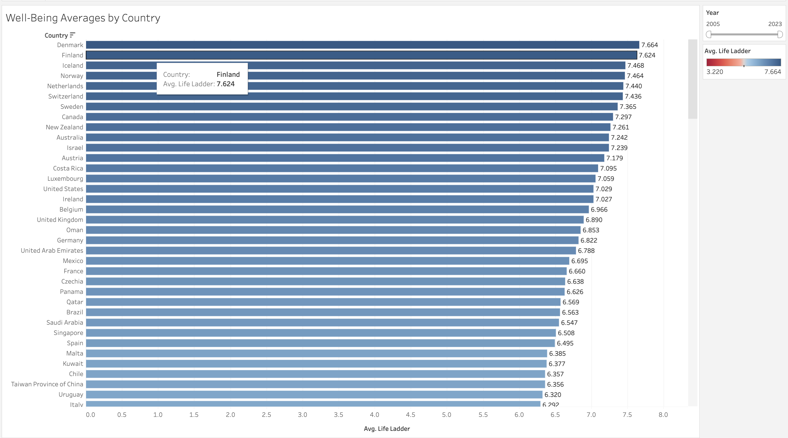
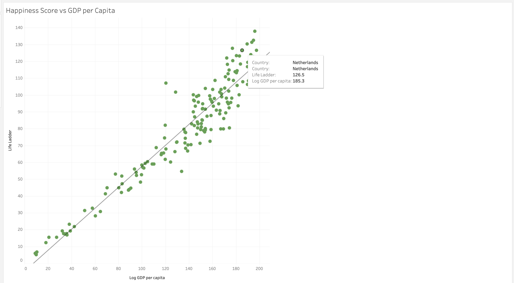
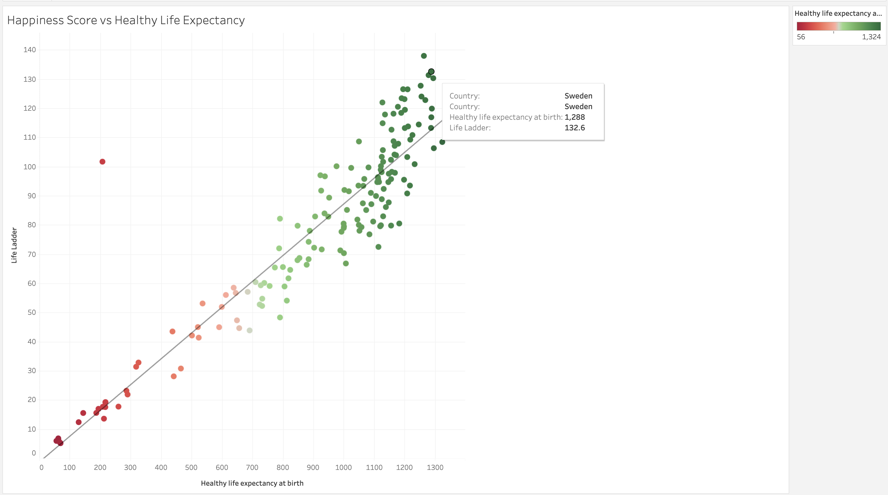
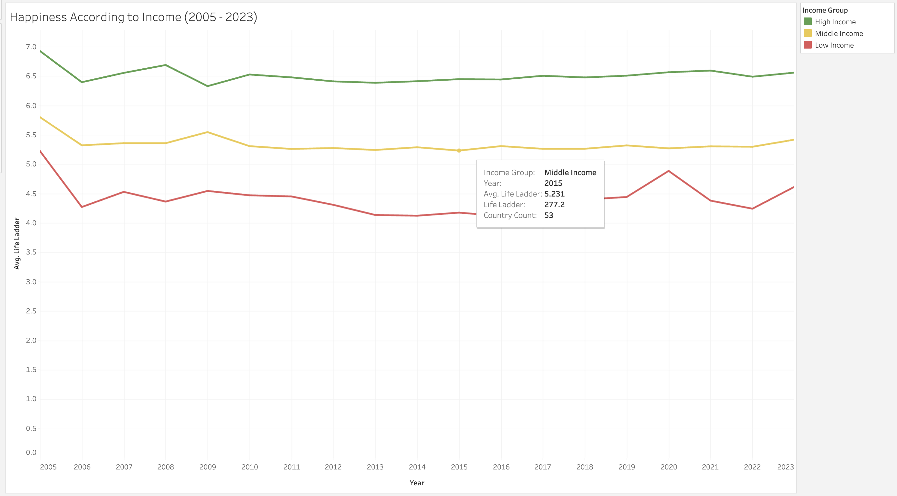

World Happiness Report Analysis (2005-2023)
Global Happiness Distribution

Key Finding: Clear regional patterns emerge with Northern European countries consistently showing higher happiness levels, while African nations generally report lower scores.
Happiness Rankings by Country
Key Finding: Nordic countries dominate the top positions, with Finland, Denmark, and Iceland leading the global happiness rankings.
GDP vs Happiness Correlation
Key Finding: There's a strong positive correlation between GDP per capita and happiness scores, though with diminishing returns at higher income levels.
Health and Happiness Relationship
Key Finding: Countries with higher life expectancy tend to report greater happiness levels, showing the crucial link between physical well-being and life satisfaction.
Happiness Trends by Income Group
Key Finding: A persistent happiness gap exists between income groups, with high-income countries maintaining consistently higher happiness levels over time.